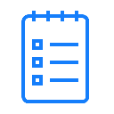

Иерархичный список задач
Список задач:
{% load subtasks %} {% for task in tasks %} {% get_task_children task %} {% endfor %}
Добавить новую задачу
Сайт изготовлен командой "Иерархичный to-do list"
Добавить подзадачу